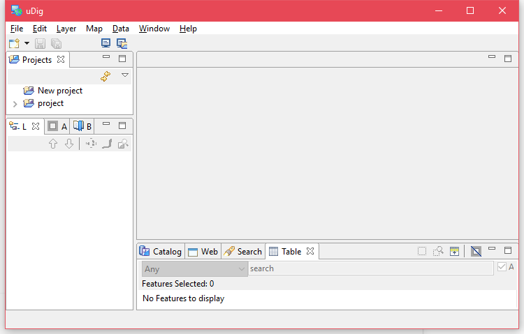
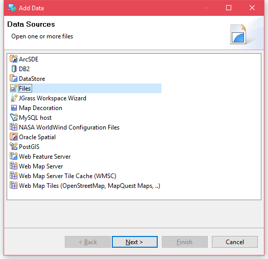
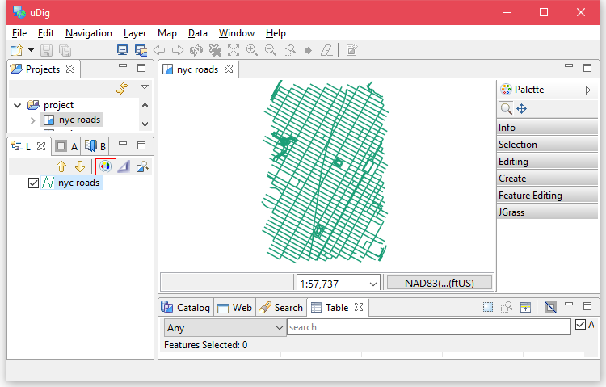
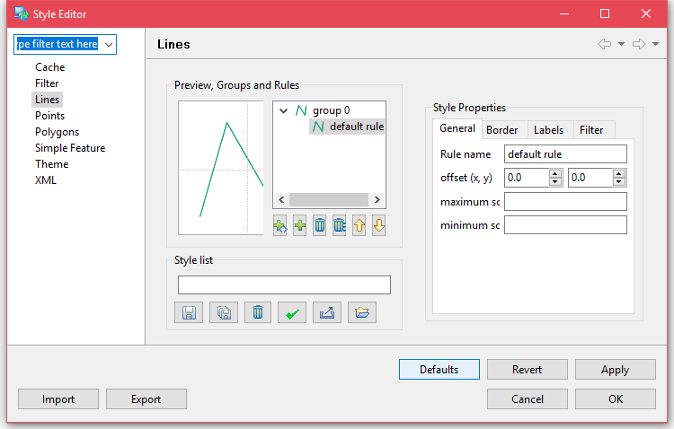
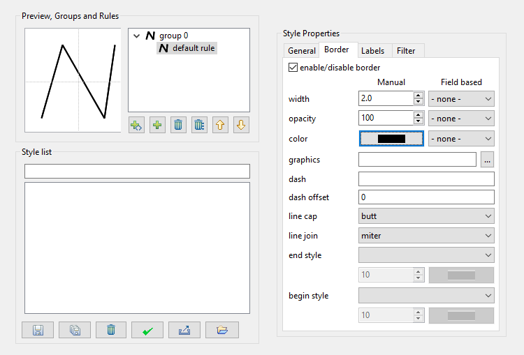
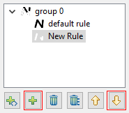
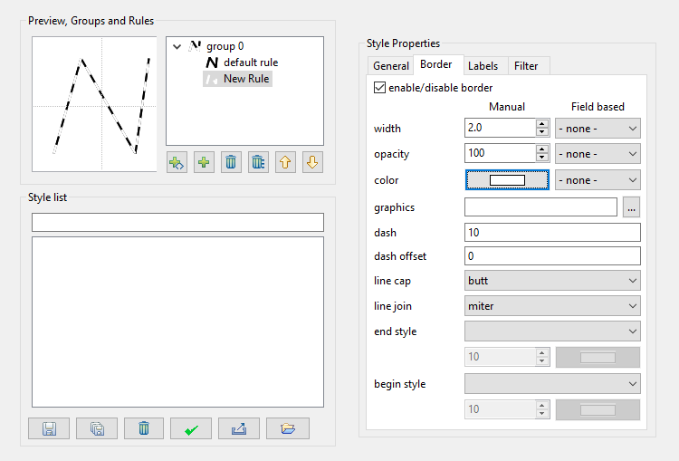
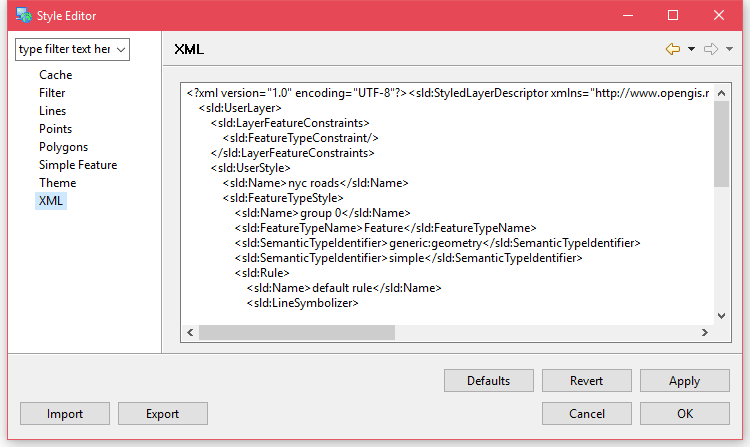
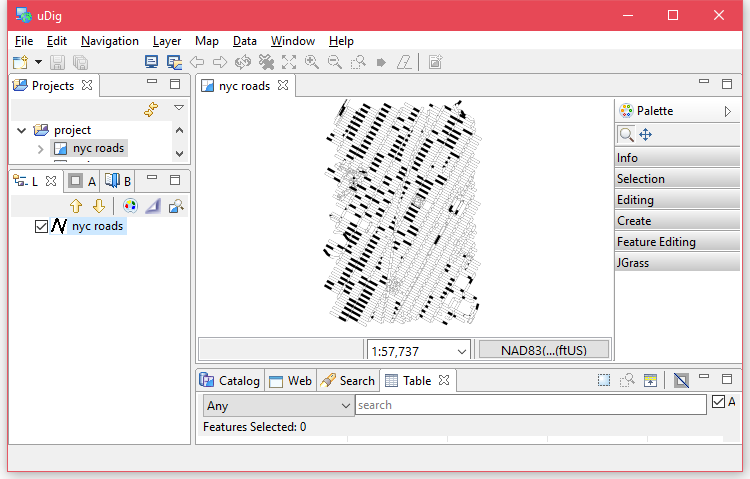

使用uDig辅助样式设置
如果对SLD不太熟悉，只想做一些简单的样式设置的话，可以使用软件uDig 辅助生成SLD代码。
安装uDig
首先到官网下载合适的安装包，
我这里使用的是Release 2.0.0.RC1版本，x86_64 Zip，这样我就可以不用安装，
直接在文件夹中运行udig.bat，你也可以下载安装包安装到系统中。

导入Shapefile
在菜单栏选择Layer>Add…，进入添加数据窗口。

选择Files，点击Next按钮并在文件选择对话框中找到之前的nyc_roads.shp，打开。
设置线段样式
在图层列表中选中nyc_roads，点击右上角的调色盘，打开样式设置窗口


由于nyc_roads图层都是线要素，所以我们只用关心线要素的样式定义。
在Lines页面中，我们有一个group0样式组，还有一个默认样式default rule。
在Border选项卡中设置线的样式，width设置为2.0，color设置为黑色。

在样式组下方点击＋添加一个新规则，再点击↓将它移到上一个规则上层。

将新规则的with也设置为2.0，color设置为白色，dash设置为10。

这时候可以在左上方的预览图中看到最终效果，是黑白相间的线段，白色线段的长度为10个单位。
点击Apply保存设置，再点击左侧的XML标签就会在右侧显示对应SLD代码。

预览样式
设置完成后，点击OK按钮，保存并退出样式设置窗口，回到uDig主界面， 会发现样式已经应用了，可以在预览窗口中缩放，拖动查看效果。

使用样式
现在有了SLD代码，可以像上文那样在GeoServer中对图层使用新样式。
更多uDig的属性设置可以动手试试，或者到uDig官网 获取更多相关资料。